重点研发-蓝色科技
19 页 · rdp_blue_technology
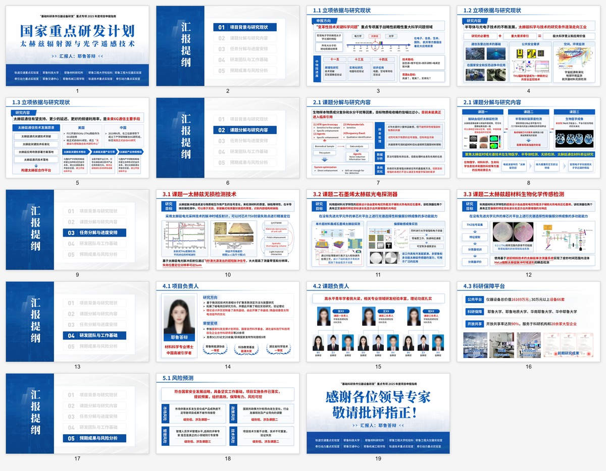
19 页 · rdp_blue_technology

17 页 · nsfc_dark_blue
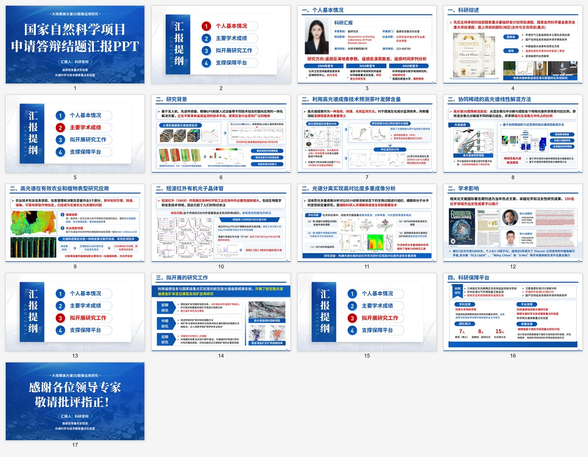
17 页 · nsfc_bright_blue_white
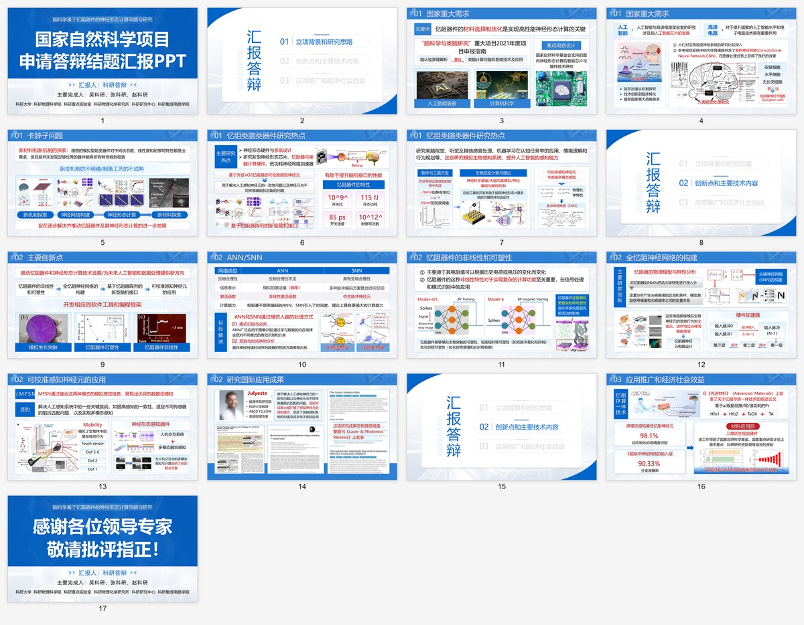
19 页 · nsfc_dark_blue_white
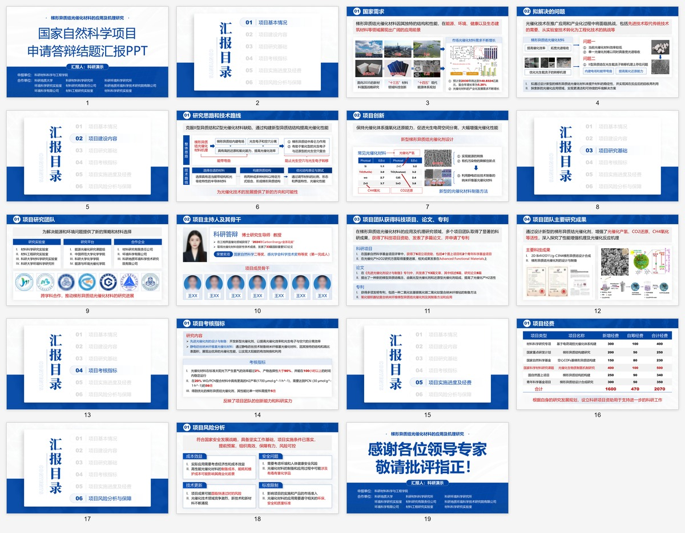
17 页 · nsfc_white_blue
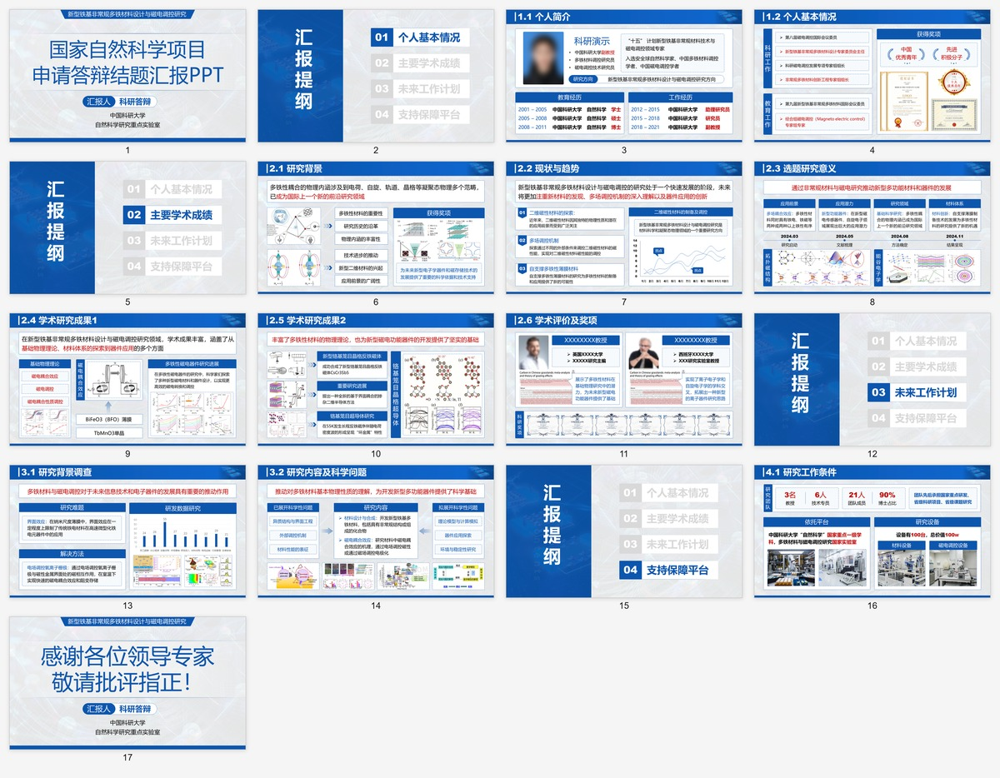
17 页 · nsfc_green
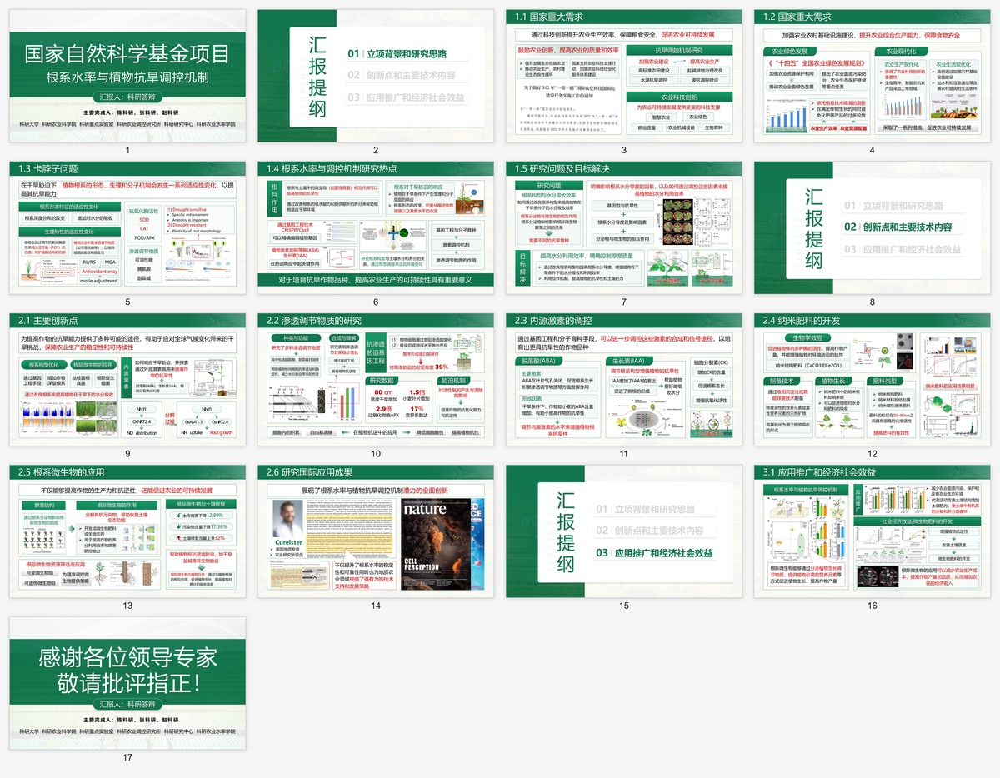
19 页 · nsfc_red
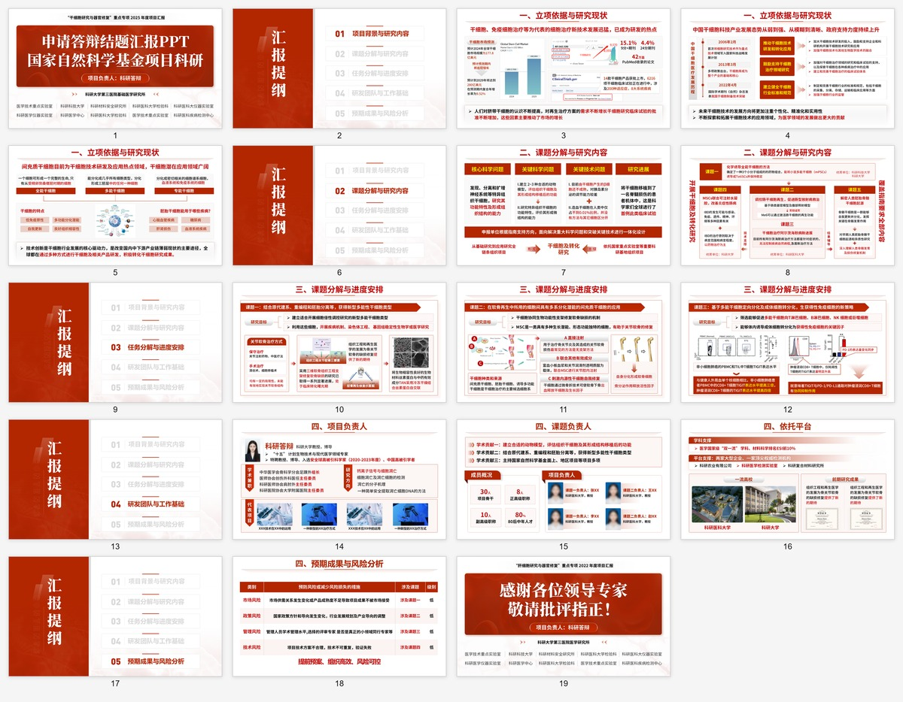
17 页 · nsfc_purple
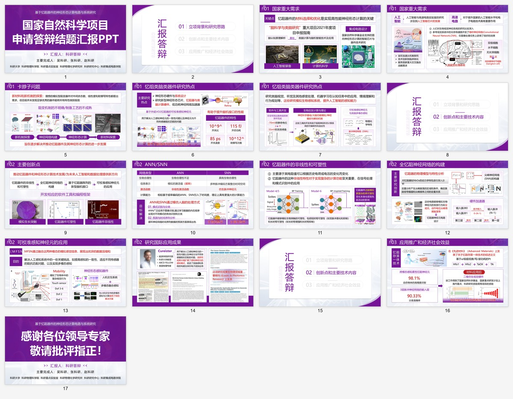
18 页 · afm_dark_blue
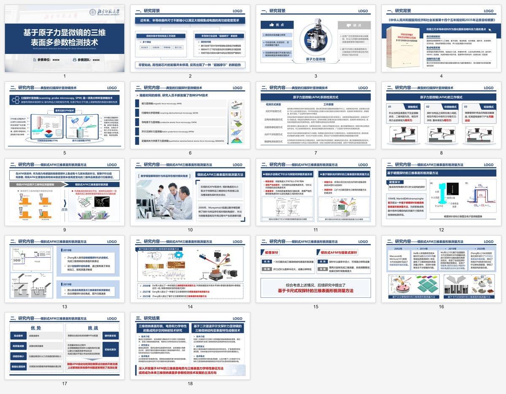
19 页 · defense_academic_blue_topnav
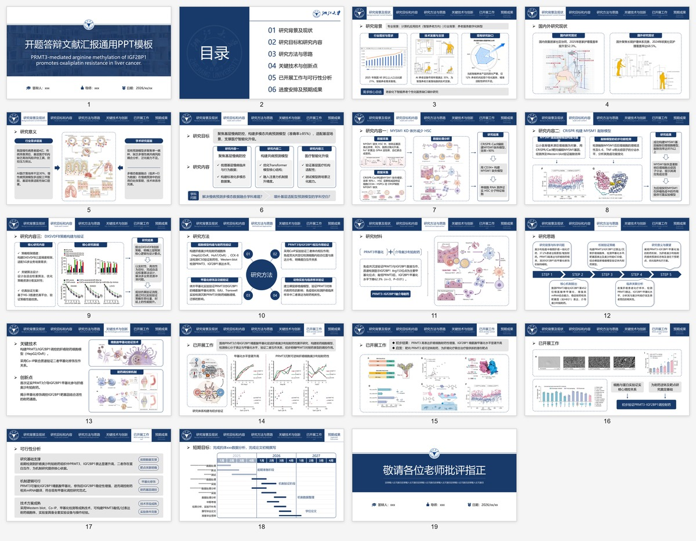
30 页 · defense_dark_blue_leftnav
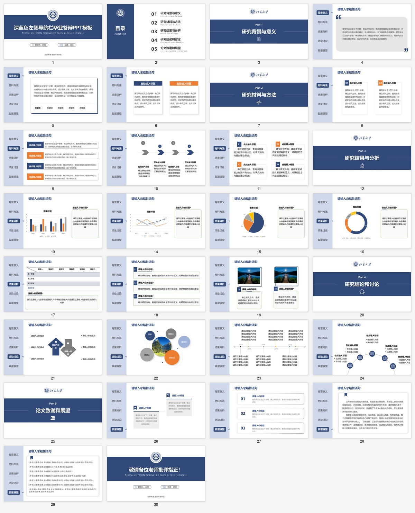
29 页 · defense_burgundy_leftnav
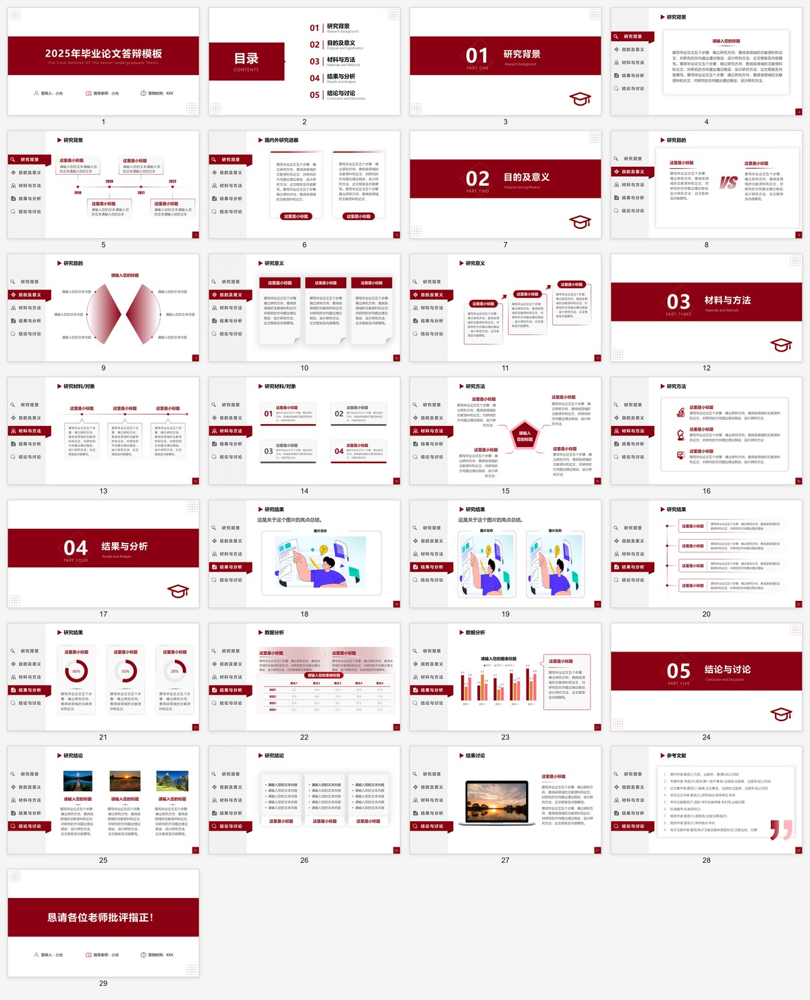
18 页 · proposal_blue_white
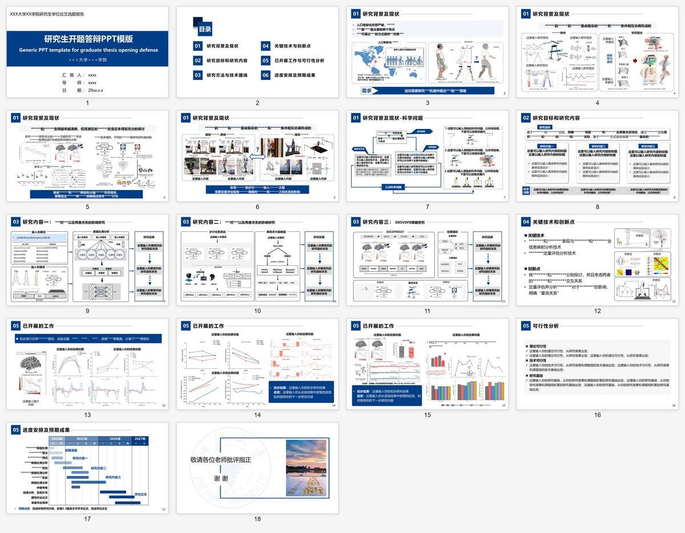